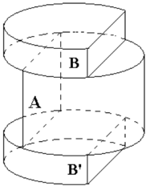
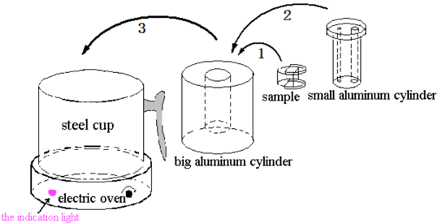
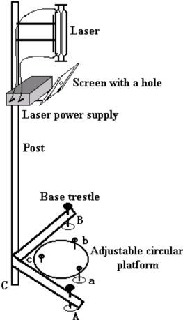
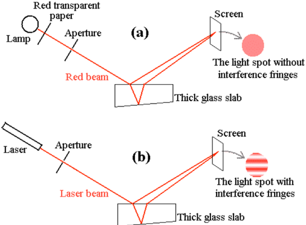
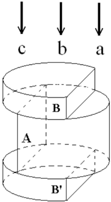

Experimental problem 1 - Using the interference method to measure the thermal expansion coefficient and temperature coefficient of refractive index of glass (10 points)
General instructions (Experimental Competition). Before attempting to assemble your apparatus, read the problem text completely. The time available for Experimental problem 1 is 2 hours and 45 minutes; that for Experimental problem 2 is 2 hours and 15 minutes. Use only the pen and equipment provided. Use only one side of the provided sheets of paper. In addition to blank sheets where you may write freely, there is a set of Answer sheets where you must summarize the results you have obtained; numerical results must be written with as many digits as appropriate, and do not forget the units. Write on the blank sheets the results of all your measurements and whatever else you deem important for the solution, using mainly equations, numbers, symbols, graphs, figures and as little text as possible. Write on top of each sheet your student code, and on the blank sheets also the progressive number of each sheet (Page , from 1 to ) and the total number () of blank sheets used. Start a new page for each section. When finished, turn in all sheets in proper order (answer sheet first, then used sheets in order, unused sheets and problem text at the bottom), put them all inside the envelope provided, and leave everything on your desk. You are not allowed to take anything out of the room.
(1) Instructions
Optical instruments are often used at high or low temperatures. When optical instruments are used at different temperatures, the thermal properties of the materials of which the optical elements were made, including thermal expansion and the variation of refractive index with temperature, will directly affect their optical properties. Two parameters, i.e. the linear thermal expansion coefficient and the temperature coefficient of refractive index , are defined as
respectively to describe these properties, where stands for the length of the material, the temperature, and the refractive index. The purpose of the present experiment is to measure and of a given glass material.
(2) Experimental apparatus, devices, and materials
- Sample. The cylinder-like sample used in the present experiment is made of uniform and isotropic glass, as shown in Fig. 1, where represents a glass cylinder with a segmental part parallel to its axis cut away; its top and bottom surfaces are approximately parallel to each other. and are two circular plates made of the same glass material, from each of which a segmental part parallel to the axis was also cut away. The top and bottom surfaces of each glass plate are not parallel to each other. , and are glued together as a whole, as shown in Fig. 1. The refractive index of the glue is the same as that of the glass, and its thickness can be neglected.

Figure 1: the glass sample - cylinder with plates and glued to it.- Heater. The heater used in this experiment is schematically shown in Fig. 2. A knob on the right of the electric oven is used to adjust the temperature of the electric oven. A big aluminum cylinder has a co-axial pipe-like sample cavity bored in the middle of it. The experimental sample can be put at the bottom of this cavity. Besides, there is a small aluminum cylinder, through which two tube-like holes of different radius were bored: the small hole allows light to pass through, while a probe of a thermometer can be inserted in the big hole. If you want to heat the sample, you should first slip the sample carefully into the cavity of the big aluminum cylinder before you heat it (in doing so, the big aluminum cylinder should be inclined somewhat to avoid cracking the sample). Next, put the small aluminum cylinder onto the sample already located in the cavity. Then put the whole big aluminum cylinder, including the sample and the small cylinder, inside the steel cup on the electric oven. (For heating, you should not put any water in the steel cup, and you shouldn’t take away the steel cup but put the whole aluminum cylinder directly on the oven.)

Figure 2: the heater - electric oven, steel cup, big and small aluminum cylinders, and sample.- Light source holder. As shown in Fig. 3, a support consisting of a vertical post and a base trestle is designed to hold the laser light source. The post and the base trestle are fixed together at and two tunable adjusting screws and are attached to the trestle. A He-Ne laser and its power supply are held at the upper part of the post. Just below the laser, a slant bracket is attached to the power supply, on which is placed an aluminum plate with a hole through it. A piece of graph paper is attached to the aluminum plate, which can be used as an observation screen.

Figure 3: the light source holder, post, base trestle, screen with a hole, and adjustable circular platform.-
Sample platform. A circular platform with three adjusting screws , and is designed to hold the heating oven or the big aluminum cylinder including the sample and the small aluminum cylinder. The platform is placed on the experimental table, close to the base trestle, right below the laser light source, as shown in Fig. 3.
-
A digital thermometer.
-
A straight ruler.
-
A basin (containing the cooling water).
-
A piece of towel.
-
A piece of graph paper.
-
A calculator.
-
A pen and a pencil.
Attention: (a) Never look at the laser light source along the direction opposite to the incident direction of the light, otherwise the laser light might hurt your eyes. (b) Never touch the optical surface of the sample; take the sample gently to avoid any damage.
1. Answer Questions
1.1 When a beam of white natural light coming from a lamp and passing through a piece of red transparent paper strikes a thick glass slab of thickness about 2 cm, the beams reflected from the top and bottom surfaces of the slab meet at the observation screen, resulting in a light spot on the screen without interference fringes, as shown in Fig. 4(a). However, when a laser beam strikes the same glass slab, the reflected beams meet at the same observation screen, resulting in a light spot with interference fringes, as shown in Fig. 4(b). What is the reason accounting for these two different phenomena? (choose the correct one)
- A. The laser beam is stronger than the red beam.
- B. The laser beam is more collimated than the red beam.
- C. The laser beam is more coherent than the red beam.
- D. The wavelength of the laser beam is shorter than that of the red beam.

Fig. 4: (a) red beam - light spot without interference fringes; (b) laser beam - light spot with interference fringes.1.2a As shown in Fig. 5, if a laser light beam strikes approximately normally on the regions , and of the sample respectively, how many main light spots of the reflected light will be observed (need not consider multiple reflections)? Will the profiles of these reflected optical spots be inevitably the same as that of the incident light?

Fig. 5: laser beam incident on regions , , of the composite glass sample.1.2b If the profile of some spots of the reflected light is different from that of the incident light, please give a reason to account for it.
2. Experiment: Measurement of and of the glass (7.6 points)
With the wavelength of the laser light , the height of the glass cylinder equal to , and the average refractive index of the glass corresponding to this given wavelength and the given temperature range of measurement, measure the thermal expansion coefficient and the temperature coefficient of the refractive index for the glass sample over the temperature range from C to C. (Within this temperature range and may be taken as constant.)
- 2.1 Design the experiment, draw the experimental ray diagrams and derive the formulae relevant to the measurement. (3.2 points)
- 2.2 Carry out the experiment and record the measured data of the thermal expansion coefficient and . (1.6 points)
- 2.3 Calculate and of the given glass material and estimate their uncertainties. (2.6 points)
- 2.4 Write the final experimental results. (0.2 points)
Attention: (1) When putting the sample into the sample cavity of the big aluminum cylinder, in order to avoid cracking the sample, incline the big aluminum cylinder somewhat and make the sample slip towards the bottom of the sample cavity carefully and slowly. (2) During the experiment, the temperature can be increased continuously. In order to guarantee enough time you had better measure your data when the temperature is increasing. To heat the sample, the knob of the electric oven may be first turned to its maximum. When the temperature approaches near 90 C (around 85 C), turn the knob to the minimum immediately to stop heating. During heating, the indication light on the left of the oven might go off and then on again; this indicates that the oven is controlling the temperature itself automatically, so do not worry about it. (3) After the sample in the cavity of the big aluminum cylinder is heated enough, its natural cooling down will be very slow. To get rapid cooling, you may put the heated steel cup containing the big aluminum cylinder (with the small aluminum cylinder inside) into the water-filled basin. After a while of cooling (at least 5 minutes), carefully use the towel to wrap the big aluminum cylinder and put it directly into the cooling water to speed up the cooling process. Be careful to avoid burning your hand. After cooling, use the towel to dry the big aluminum cylinder and put it back into the steel cup; then you can heat it again. In order to avoid short circuit, never pour any water into the electric oven. (4) When you finish the experiment, turn off the electric oven immediately to avoid overheating. Warning: be careful in your experiments; if your sample or instrument is broken, you may have difficulties to continue your experiments, since there are not enough backups.
Topic: Wave Optics, Thermodynamics Metodi: Interference & Diffraction Analysis, Experimental Data Analysis, Graph Linearization, Error Propagation Competenze: Physical Reasoning, Experimental Data Analysis, Measurement & Instrumentation, Graph Linearization, Error Propagation Objects: Cylinder, Disk, Screen Fonte: Testo (PDF) - p.1
**Problema sperimentale 1 - Utilizzando il metodo di interferenza per misurare il coefficiente di espansione termica e il coefficiente di temperatura dell’indice di rifrazione del vetro (10 punti) **
Instruzioni generali (Concorso sperimentale). Prima di provare a montare l’apparecchio, leggi completamente il testo del problema. Il tempo disponibile per il problema sperimentale 1 è di 2 ore e 45 minuti; per il problema sperimentale 2 è di 2 ore e 15 minuti. Utilizzare solo la penna e l’attrezzatura fornite. Utilizzare solo un lato dei fogli di carta forniti. Oltre ai fogli bianchi dove è possibile scrivere liberamente, c’è un insieme di fogli di risposte in cui è necessario riassumere i risultati ottenuti; i risultati numerici devono essere scritti con quante cifre è appropriato, e non dimenticare le unità. Scrivi sui fogli bianchi i risultati di tutte le tue misure e qualsiasi altra cosa ritenga importante per la soluzione, utilizzando principalmente equazioni, numeri, simboli, grafici, figure e il meno testo possibile. Scrivere sopra ogni foglio il codice dello studente e sui fogli bianchi anche il numero progressivo di ogni foglio (pagina , da 1 a ) e il numero totale () dei fogli bianchi utilizzati. Inizia una nuova pagina per ogni sezione. Quando avete finito, rivolgete tutti i fogli in ordine (in primo luogo, la scheda di risposta, poi i fogli usati, i fogli non usati e il testo del problema in basso), mettetelo tutti dentro la busta fornita e lasciate tutto sulla scrivania. Non ti e’ permesso portare nulla fuori dalla stanza.
(1) Instruzioni
Gli strumenti ottici sono spesso utilizzati a temperature elevate o basse. Quando gli strumenti ottici vengono utilizzati a temperature diverse, le proprietà termiche dei materiali di cui sono stati prodotti gli elementi ottici, compresa l’espansione termica e la variazione dell’indice di rifrazione con la temperatura, influenzano direttamente le loro proprietà ottiche. Due parametri, cioè: il coefficiente di espansione termico lineare e il coefficiente di temperatura dell’indice di rifrazione sono definiti come
rispettivamente per descrivere queste proprietà, dove rappresenta la lunghezza del materiale, la temperatura e l’indice di rifrazione. Lo scopo del presente esperimento è di misurare e di un dato materiale vetro.
(2) Apparecchi, dispositivi e materiali per sperimentazioni
- Sampolo. Il campione simile a cilindro utilizzato nel presente esperimento è costituito da vetro uniforme e isotropo, come mostrato nella figura. 1, dove rappresenta un cilindro di vetro con una parte segmentata parallela al suo asse tagliato; le sue superfici superiore e inferiore sono approssimativamente parallele tra loro. e sono due lastre circolari di vetro dello stesso materiale, da ciascuna delle quali è stata tagliata anche una parte segmentare parallela all’asse. Le superfici superiore e inferiore di ciascuna piastra di vetro non sono parallele tra loro. , e sono incollati insieme nel loro insieme, come mostrato alla figura. 1. L’indice di rifrazione della colla è lo stesso di quello del vetro, e il suo spessore può essere trascurato.
Figura 1: campione di vetro - cilindro con le lastre e incollate a esso.
- Chistigliatore. Il riscaldatore utilizzato in questo esperimento è schematicamente mostrato nella figura. 2. Per regolare la temperatura del forno elettrico si utilizza un pulsante a destra. Un grande cilindro di alluminio ha una cavità campione co-assiale simile a tubo annoiato nel suo centro. Il campione sperimentale può essere messo in fondo a questa cavità. Inoltre, c’è un piccolo cilindro di alluminio, attraverso il quale sono stati annoiati due buchi simili a tubi di raggio diverso: il piccolo buco permette alla luce di passare attraverso, mentre una sonda di termometro può essere inserita nel buco grande. Se si desidera riscaldare il campione, prima di riscaldarlo si deve scivolare il campione attentamente nella cavità del grande cilindro di alluminio (in tal modo il grande cilindro di alluminio deve essere un po’ inclinato per evitare la rottura del campione). In seguito, inserire il piccolo cilindro di alluminio sul campione già situato nella cavità. Poi mettere l’intero grande cilindro di alluminio, compreso il campione e il cilindro piccolo, all’interno della tazza in acciaio sul forno elettrico. (Per riscaldare non si deve mettere acqua nella tazza d’acciaio e non si deve togliere la tazza d’acciaio ma mettere l’intero cilindro di alluminio direttamente sul forno.)
Figura 2: il riscaldatore - forno elettrico, tazza in acciaio, cilindri in alluminio grandi e piccoli e campione.
- Ricoltore di sorgente luminosa. Come mostrato alla figura. 3, un supporto costituito da un palo verticale e da un treptole base è progettato per contenere la fonte di luce laser. Il poste e il trestolo di base sono fissati insieme a e al trestolo sono fissati due viti di regolazione regolabili e . Un laser He-Ne e la sua alimentazione sono tenuti nella parte superiore del posto. Poco sotto il laser, è attaccato un supporto inclinato alla alimentazione, su cui è posizionata una piastra di alluminio con un buco attraverso di essa. Al piatto di alluminio è attaccato un pezzo di carta grafica che può essere utilizzato come schermo di osservazione.
Figura 3: tenitore della sorgente luminosa, poste, trestale di base, schermo con buco e piattaforma circolare regolabile.
-
Piattaforma campione. Una piattaforma circolare con tre viti di regolazione , e è progettata per contenere il forno di riscaldamento o il grande cilindro di alluminio, compreso il campione e il piccolo cilindro di alluminio. La piattaforma è posizionata sul tavolo sperimentale, vicino al trestolo di base, proprio sotto la fonte di luce laser, come mostrato nella figura. 3.
-
Un termometro digitale.
-
Un governante retto.
-
Un bacino (contenente l’acqua di raffreddamento).
-
Un pezzo di asciugamano.
-
Un pezzo di carta grafica.
-
Una calcolatrice.
-
Una penna e una matita.
Attenzione: a) Non guardare mai la fonte di luce laser nella direzione opposta alla direzione incidentale della luce, altrimenti la luce laser potrebbe danneggiare gli occhi. b) Non toccare mai la superficie ottica del campione; prendere il campione con delicatezza per evitare danni.
1. Risposte alle domande
Quando un fascio di luce naturale bianca proveniente da una lampada e che passa attraverso un pezzo di carta rossa trasparente colpisce una spessa lastra di vetro di circa 2 cm di spessore, i fasci riflessi dalle superfici superiore e inferiore della lastra si incontrano presso lo schermo di osservazione, dando luogo a un punto luminoso sullo schermo senza margini di interferenza, come mostrato alla figura. 4(a). Tuttavia, quando un raggio laser colpisce la stessa lastra di vetro, i raggi riflessi si incontrano nello stesso schermo di osservazione, dando luogo a un punto luminoso con margini di interferenza, come mostrato nella figura. 4(b). Qual è la ragione che spiega questi due fenomeni diversi? (scelgi quello giusto)
- A. Il raggio laser è più forte del raggio rosso.
- B. Il raggio laser è più collimato del raggio rosso.
- C. Il raggio laser è più coerente del raggio rosso.
- D. La lunghezza d’onda del raggio laser è più breve di quella del raggio rosso.
Fig. 4: (a) raggio rosso - punto luminoso senza margini di interferenza; (b) raggio laser - punto luminoso con margini di interferenza.
1.2a Come mostrato nella figura. 5, se un raggio laser colpisce in modo approssimativamente normale le regioni , e del campione, rispettivamente, quante punti principali di luce della luce riflessa saranno osservate (non occorre considerare più riflessioni)? I profili di questi punti ottici riflessi saranno inevitabilmente gli stessi di quelli della luce incidente?
Fig. 5: incidente del fascio laser sulle regioni , , del campione di vetro composto.
Se il profilo di alcuni punti della luce riflessa è diverso da quello della luce incidente, si prega di fornire una ragione per spiegare il motivo.
2. Esperimento: misurazione del e del vetro (7,6 punti)
Con la lunghezza d’onda della luce laser , l’altezza del cilindro di vetro pari a e l’indice di rifrazione medio del vetro corrispondente a questa lunghezza d’onda data e alla gamma di temperatura di misura data, misurare il coefficiente di espansione termica e il coefficiente di temperatura dell’indice di rifrazione per il campione di vetro nella gamma di temperatura da C a C. (All’interno di questo intervallo di temperatura e possono essere considerati costanti.)
- **2.1 ** Progettare l’esperimento, disegnare i diagrammi dei raggi sperimentali e derivare le formule pertinenti alla misura. 3,2 punti)
- **2.2 ** Eseguire l’esperimento e registrare i dati misurati del coefficiente di espansione termica e . 1,6 punti)
- **2.3 ** Calcolare e del vetro e stimare le loro incertezze. 2,6 punti)
- **2.4 ** Scrivere i risultati finali dell’ sperimentazione. (0,2 punti)
Attenzione:MSK1/> (1) Quando si inserisce il campione nella cavità del campione del grande cilindro in alluminio, per evitare la rottura del campione, si inclina un po’ il grande cilindro in alluminio e si fa scivolare il campione verso il fondo della cavità del campione con attenzione e lentamente. (2) Durante l’esperimento, la temperatura può essere aumentata continuamente. Per garantire un tempo sufficiente, si dovrebbe misurare meglio i dati quando la temperatura aumenta. Per riscaldare il campione, il pulsante del forno elettrico può essere prima girato al suo massimo. Quando la temperatura si avvicina a 90 C (circa 85 C), girare immediatamente il pulsante al minimo per fermare il riscaldamento. Durante il riscaldamento, la luce di indicazione sulla sinistra del forno potrebbe spegnersi e poi ricendere; ciò indica che il forno sta controllando automaticamente la temperatura, quindi non preoccuparti. (3) Dopo che il campione nella cavità del grande cilindro di alluminio sarà sufficientemente riscaldato, il suo raffreddamento naturale sarà molto lento. Per ottenere un raffreddamento rapido, si può mettere la tazza di acciaio riscaldata contenente il grande cilindro di alluminio (con il piccolo cilindro di alluminio all’interno) nel bacino pieno di acqua. Dopo un po’ di raffreddamento (almeno 5 minuti), utilizzare attentamente il asciugamano per avvolgere il grande cilindro di alluminio e metterlo direttamente nell’acqua di raffreddamento per accelerare il processo di raffreddamento. Fai attenzione a non bruciare la mano. Dopo aver raffreddato, usi il asciugamano per asciugare il grande cilindro di alluminio e riporlo nella tazza d’acciaio; poi puoi riscaldarlo di nuovo. Per evitare cortocircuiti, non versare mai acqua nel forno elettrico. (4) Quando si finisce l’esperimento, spegnere immediatamente il forno elettrico per evitare di surriscaldarsi. Avvertimento: fate attenzione nei vostri esperimenti; se il vostro campione o strumento è rotto, potreste avere difficoltà a continuare i vostri esperimenti, poiché non ci sono abbastanza backup.
Topic: Wave Optics, Thermodynamics Metodi: Interference & Diffraction Analysis, Experimental Data Analysis, Graph Linearization, Error Propagation Competenze: Physical Reasoning, Experimental Data Analysis, Measurement & Instrumentation, Graph Linearization, Error Propagation Objects: Cylinder, Disk, Screen Fonte: Testo (PDF) - p.1